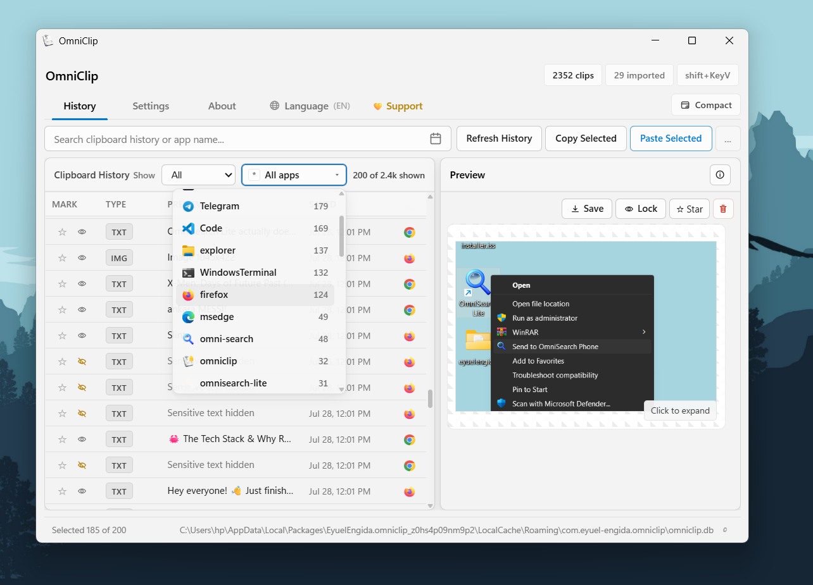
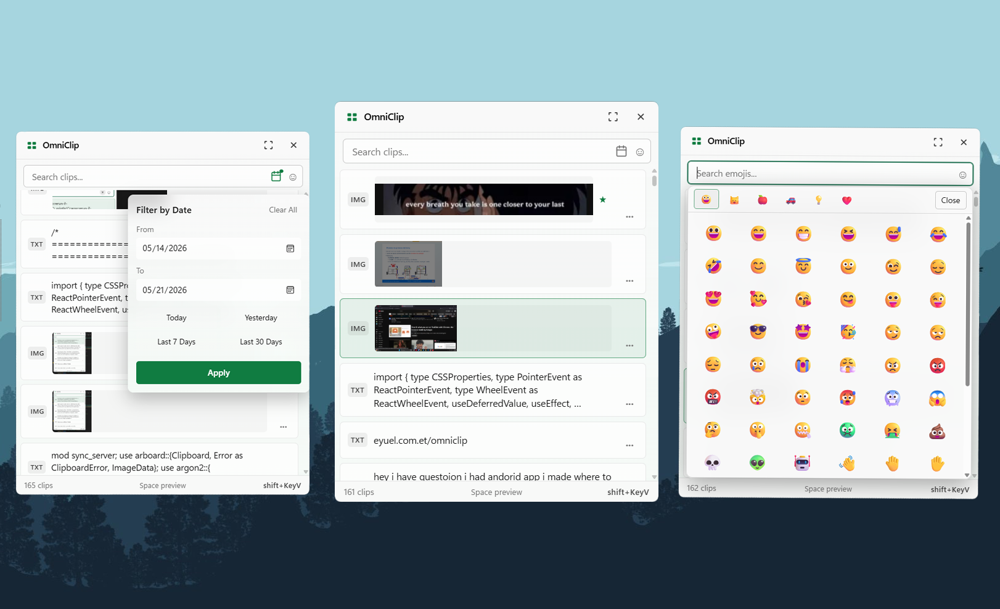

Why I Built It
The built-in Windows clipboard history is useful, but it is limited when you copy a lot during real work. I wanted a clipboard manager that could keep long-term history, search quickly, show where clips came from, and stay local-first instead of sending clipboard data to a cloud service.
That became OmniClip: a Windows clipboard manager built for daily use, power users, and anyone who wants a better way to reuse text, links, images, commands, addresses, snippets, and frequent notes.
What OmniClip Does
- Persistent local clipboard history for text, URLs, and images
- App Origin Tracking with source application names and icons
- Fast search and filters for text, links, images, favorites, folders, and apps
- Folders and notes for organizing frequently used clips
- Clip editing, text transforms, and bulk actions
- Sensitive clip protection with master password locking and auto-lock detection
- Image preview, OCR, Google Lens, and translation tools
- Android sync over local WiFi, with no internet required
- Backup import/export for moving or restoring clipboard history
Local-First Privacy
Your clipboard can contain passwords, private messages, work notes, addresses, screenshots, and code. OmniClip is designed around that reality.
OmniClip stores clipboard history locally on your Windows PC. Mobile sync works over your local WiFi or hotspot, and there is no cloud account or telemetry layer in the middle. Pro AI features are optional and support both cloud providers and local Ollama models, so users can choose the privacy tradeoff that fits them.
Free and Pro
The core clipboard manager is free. OmniClip Pro unlocks extra power-user features such as AI chat, AI rewrite, OCR AI translation, Google Lens image search, premium themes, folder tab view, and higher storage limits.